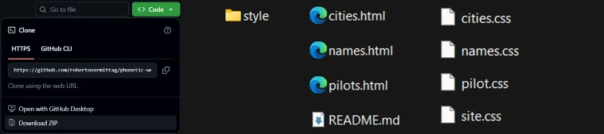
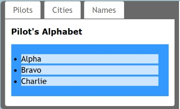

Seguiremos um roteiro baseado no livro denominado "Practical Guide to Git and GitHub For Windows Users", escrito por Roberto Vormittag.
Por que "Phonetic website? A ideia apresentada no livro é usar 'palavras' para representar letras na técnica muito usada em radio comunicação. É mais fácil distinguir as palavras 'Delta' e 'Tango' do que as letras 'D' e ''T'. Um dos mais conhecidos é o alfabeto dos pilotos começando com 'Alpha', 'Bravo', 'Charlie' (A, B e C). Assim o voo BA-461 é comunicado pelos pilotos como "Bravo Alpha Four Six One". Desta forma o "Phonetic website" usa o alfabeto dos pilotos acrescido de nomes de 'cidades' e 'pessoas' para o desenvolvimento prático dos commandos do Git. O site é estático e usa HTML e CSS sem que voce precise aprender técnicas de construção de sites. O acesso a este site que é hospedado no GitHub é: https://github.com/robertovormittag/phonetic-website. Basta que voce faça o download do zip deste site. Depois de feito o download do arquivo zip, extraia seu conteúdo. Voce irá encontrar três páginas em HTML e uma pasta 'style' na qual existem quatro folhas de estilo, CSS. O arquivo README.md pode ser apagado.
 A imagem acima mostra três abas de navegação nas quais voce pode encontrar as primeiras letras de cada alfabeto. Com o passar dos exercícios voce irá completar o alfabeto de A até Z.
Neste momento é hora de voce criar um repositório para hospedar seu projeto.
Estas são as etapas essenciais para iniciar seu projeto no GitHub: